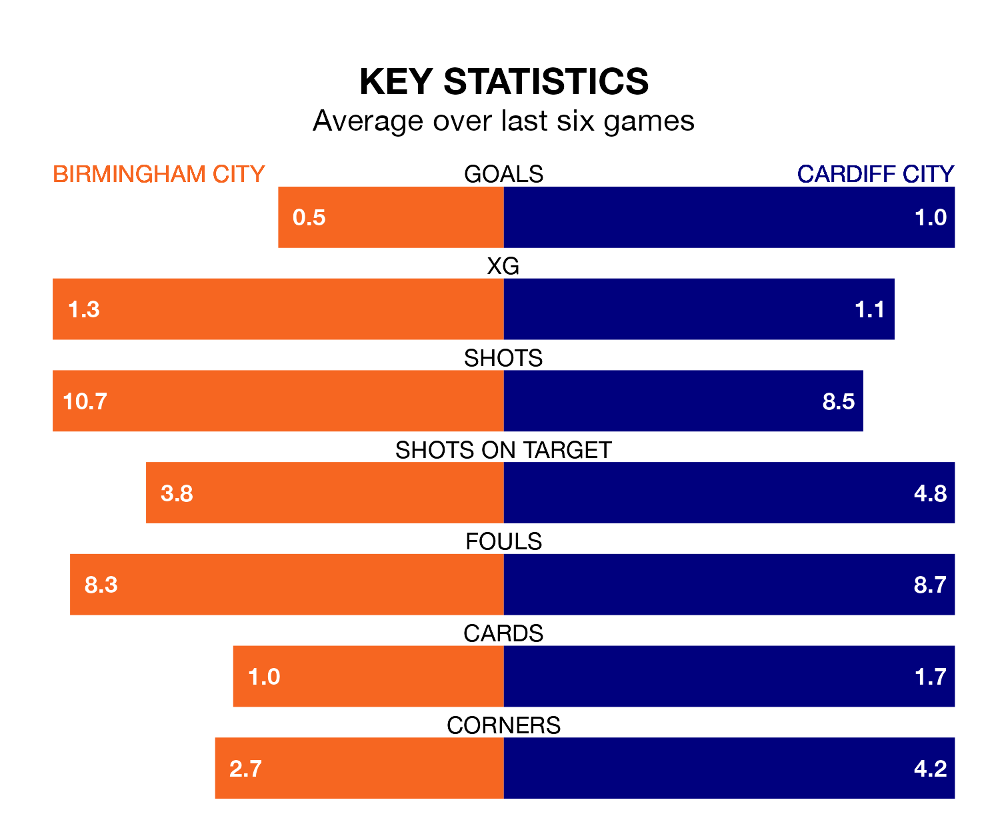

Birmingham City are on a poor run ahead of hosting Cardiff City at St Andrew's on Wednesday, with just three points collected from their last six games.
The Blues have picked up just one win in their last six EFL Championship games, and face a Bluebirds side whose last six games have brought three wins and three losses.
Birmingham are 22nd in the table after 41 games, of which they have won 11 and drawn nine, earning 42 points.
Cardiff are 11 places ahead of Birmingham City in 11th, with 17 wins and five draws putting them on 56 points.
In the last 10 years, Birmingham and Cardiff have played each other on 18 occasions. Birmingham won three of them, Cardiff eight, and they drew seven times.
On average, the Blues scored 0.9 goals and the Bluebirds 1.6 in those matches.
Their last meeting was on December 13, when Birmingham won 1-0 away.
With 45 goals in 41 games so far this season, the Blues are scoring at below the league average rate with 1.1 goals per game. And they are conceding more than average, letting in 63 goals at a rate of 1.5 per game.
Cardiff City are also below average scorers, with 1.1 goals per game, compared to a league average of 1.3. They have conceded 1.4 goals per game.
Birmingham's last match was on Saturday, a 2-1 loss against Leicester City, with Jay Stansfield getting the goal for the Blues.
Cardiff lost 3-1 against Hull City last time out, also on Saturday, with Karlan Ahearne-Grant on the scoresheet.
Wednesday's match will be refereed by Robert Madley, who has taken charge of 15 EFL Championship games so far this season, issuing five red cards and booking 74 players. He has awarded three penalties.
The last Birmingham game Madley refereed was a 3-1 home loss to Stoke City on December 26. His last Cardiff match was their 2-1 win away at Preston North End on November 25.
Updated: 14:47 (UTC), 09/04/24